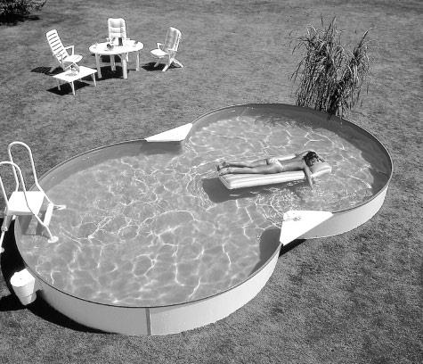
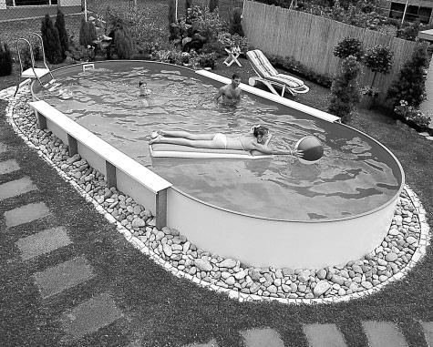
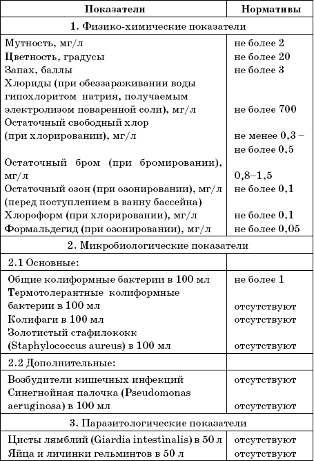
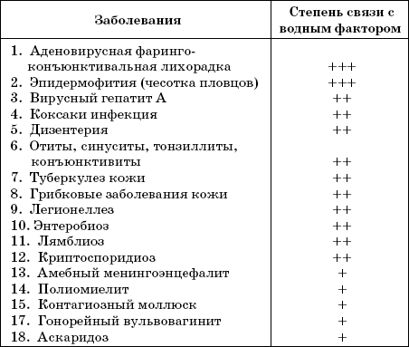
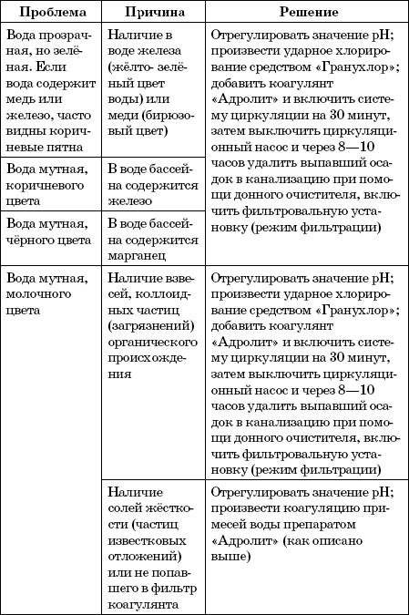
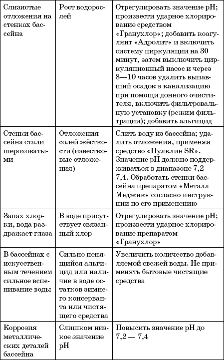

Уход за водой.
 Что происходит с водой в вашем бассейне?
Что происходит с водой в вашем бассейне?
По логике вещей это первый вопрос, который мы должны себе задать. Раньше большинство бассейнов не были оборудованы установками и эксплуатировали их несколько иначе, т. е. просто заполняли чистой водой и через несколько дней, когда вода приобретала неприятный вид, бассейны опорожняли, очищали и снова наполняли. Такой процесс, несомненно, имел некоторые недостатки: соответственные затраты на воду, нездоровые условия в бассейне и не совсем приятное купание из-за недостаточно прозрачной воды. В современном обществе требования таковы: экономичность, гигиена и комфортность. По этой причине мы должны оборудовать бассейны необходимыми устройствами и обеспечить их надлежащее обслуживание.


Когда в летнее время бассейн наполняется водой из местной водопроводной сети или колодца, в целом можно констатировать, что вода чистая; однако, под воздействием солнечного облучения и окружающей атмосферы могут возникать неприятные явления.
Внимание! Чистота воды1. Происходит загрязнение воды не только микроорганизмами из окружающего воздуха, но и теми, что привносятся в воду купающимися. Поскольку речь идет о стоячей воде, в нее не поступает кислород, в результате чего паразитирующие микроорганизмы в бассейне размножаются и воспроизводят микроводоросли. Этот процесс стимулируется еще и повышенной температурой окружающей среды, сопровождающей использование бассейна (летние температуры в открытых бассейнах, отопление в крытых бассейнах), а это приводит к тому, что вода приобретает зеленоватый цвет.
2. Ветер и дождь приносят в воду пыль, почву и листья, способствующие ее помутнению. Оба эти фактора, влияющие на бассейн, через несколько часов или дней дают свой результат: абсолютно негигиеничный бассейн, который не располагает к купанию.
Обе эти проблемы решаются следующим образом1. В воде сохраняется достаточное количество остаточного хлора, который может тотчас уничтожить бактерии и микроорганизмы, попадающие в воду.
Мы называем именно хлор, поскольку он до настоящего времени является наиболее экономичным средством для этих целей.
Есть и другие средства, такие, как иод, бром, озон, ионный обмен и т. п. однако их применению мешают высокие затраты.
2. Бассейн оборудуется фильтром, который при помощи насоса задерживает весь загрязняющий воду материал.
Что вам необходимо знатьДействующие нормы здравоохранения предписывают, что содержание свободного хлора в воде бассейна должно составлять не менее 0,3 и не более 0,5 мг на литр (или, что то же самое, содержание свободного хлора должно составлять от 0,2 до 0,6 частей на миллион).
Что означает «свободный» или «остаточный» хлор?В воде, даже после фильтрования, содержится целый ряд невидимых врагов, которых надо уничтожить.
Для этого необходимо определенное количество хлора, который действует в виде гипохлорноватой кислоты. Избыточное количество, т. е. то, которое добавляется дополнительно к количеству, необходимому для уничтожения бактерий и органических субстанций, остается в воде свободным в виде гипохлорноватой кислоты и готово бороться против любого врага – бактерий, органических субстанций и т. д., которые могут быть привнесены в воду любым путем: купающимися, воздухом, ветром, дождем и т. п.
Хлор, который остается в воде в виде гипохлорноватой кислоты, будучи добавлен дополнительно к непосредственно необходимому объему, называется свободным или остаточным хлором.
Современные препараты для хлорирования водыChlor HC– неорганическое соединение. Гипохлорид кальция в таблетках (70 % свободного хлора). Применяется при pH<8 (мягкая вода).
Chlor HC– гранулы. Применяется для дезинфекционного удара при pH<8 (мягкая вода).
Chlor 65– гранулы. Содержит 65 % свободного хлора, органическое вещество, не влияет на величину pH-фактора, для жесткой воды.
Chlor 85– большие таблетки длительного действия. Органическое вещество, содержит 85 % свободного хлора, медленно растворяется без осадка, не оказывает влияния на pH-фактор. Перед этим необходимо провести дезинфекционный удар с помощью Chlor HC или Chlor 65.
Chlor 90.Препарат длительного действия, органический, содержит 90 % свободного хлора, в жесткой воде не дает осадка.
Chlor-Stabilisator(хлорстабилизатор) – замедляет разложение хлора в воде под действием тепла и солнечного света. Добавляется 1 раз в сезон при применении органического хлора.
Рекомендуемые обеззараживающие средства и дезинфицирующие препараты1. Для обеззараживания воды плавательных бассейнов:
• хлорная известь;
• двутретьосновная соль гипохлорита кальция, ДТСГК;
• натриевая соль дихлоризоциануровой кислоты, ДХЦК;
• гипохлорит кальция нейтральный марки А;
• гипохлорит натрия технический,
• гипохлорит лития;
• дихлорантин;
• дибромантин;
• «Акватабс».
2. Для профилактической дезинфекции ванн бассейна после слива воды, а также помещений и инвентаря (водные растворы):
• хлорная известь: осветленная 1 % – для ванн и 0,2–0,3 % – для помещений и инвентаря;
• хлорамин 0,5 % – для помещений и инвентаря;
Таблица 3
Показатели и нормативы качества воды в ванне бассейна (в процессе эксплуатации)

Таблица 4
Заболевания инфекционной природы, которые могут передаваться через воду плавательных бассейнов

Связь с водным фактором: +++– высокая; ++– существенная; + – возможная.
• ниртан 3 %;
• гипохлорит натрия технический марки А и Б (0,1–0,2 %);
• хлордезин 5,0 % – для ванн: хлордезин 0,5 % и сульфохлорантин 0,2 % – для помещений и инвентаря;
• борная кислота 10 % – для ванн;
• «Дезэффект»;
• «Ника-экстра М»;
• «РИК-Д»;
Таблица 5
Решение проблем, возникающих при обслуживании бассейнов


• «Септустин»;
• «Самаровка»;
• «Септодор»;
• «Аламинол»;
• «Велтолен»;
• «Лайна»;
• «Септабик»;
• «Бромосепт-50»;
• «Полисепт»;
• «БИОПАГ-Д»;
• «ФОСФОПАГ-Д».
ФильтрованиеПроцесс фильтрования является только частью той работы, которая необходима для поддержания чистоты бассейна, и неотделим от химической обработки воды, так как одно без другого не приносит желаемого результата. При помощи одного только фильтра нельзя достичь чистой воды, если дополнительно не проводится хорошая химическая обработка. Широко распространено мнение, что все проблемы будут решены с приобретением фильтрующей установки. Мы даже называем ее «очистной установкой», хотя в действительности речь идет только о фильтре, а очистка заключается в эффективной комбинации обоих видов обработки: химического и физического. На рынке существует большой ассортимент различных фильтров для очистки воды в бассейнах.